End-to-end analytics on 17 IPL seasons and 1,090 matches — Python EDA, SQL queries, automated Excel & PDF reports, and a fully interactive static HTML dashboard deployable with zero server.
IPL generates ball-by-ball data across 17 seasons — but raw CSVs don't tell you who the most efficient batter is, which teams win despite fewer resources, or whether winning the toss actually changes outcomes. This project processes the complete dataset to surface meaningful patterns through automated reports and an interactive dashboard.
A key goal was demonstrating automated reporting — the Python script generates a 5-sheet Excel workbook and a 5-page PDF report with zero manual effort. This mirrors real-world MIS automation workflows like those used at MECON.
The dashboard is deployed as a self-contained HTML file — no server, no dependencies, just a file that opens in any browser. This is the kind of practical thinking that matters in product and data roles.
Loaded two CSVs — match-level and ball-by-ball delivery data. Standardised team names across franchise renames (e.g. Delhi Daredevils → Delhi Capitals, Kings XI Punjab → Punjab Kings). Filtered no-result matches. Computed batting averages, strike rates, bowling economy, and dismissal counts from raw ball data.
Generated 9 dark-themed charts using Matplotlib and Seaborn — team win records, win rates, top run scorers, top wicket takers, batting average vs strike rate scatter, economy vs wickets scatter, six/four hitters, toss analysis, and matches per season.
Used openpyxl to build a formatted 5-sheet Excel workbook (Overview, Team Stats, Top Batters, Top Bowlers, Boundaries) with styled headers, alternating row fills, and column widths. Used Matplotlib's PdfPages to generate a 5-page PDF with a cover page and 4 analysis pages — fully automated, zero manual formatting.
Used Plotly to build 10 interactive charts and exported them as a single self-contained HTML file using pio.to_html(include_plotlyjs=False) with Plotly loaded from CDN. The result is a 748KB file that opens in any browser with full hover, zoom, and tooltip interactivity — no server, no Python, no deployment needed.
Wrote 12 SQL queries in SQLite covering team win records, toss advantage by team, top run scorers with strike rate, top wicket takers with economy, most sixes and fours, highest innings totals, dismissal type breakdown, and best economy rates (min 50 overs).
Click any chart to expand. Scroll → to browse all 9.
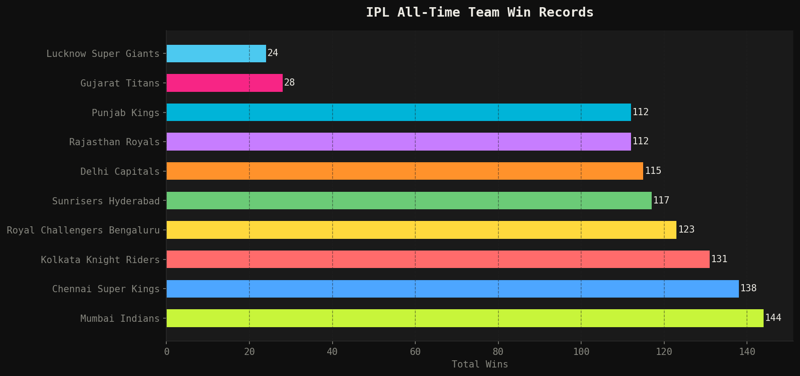
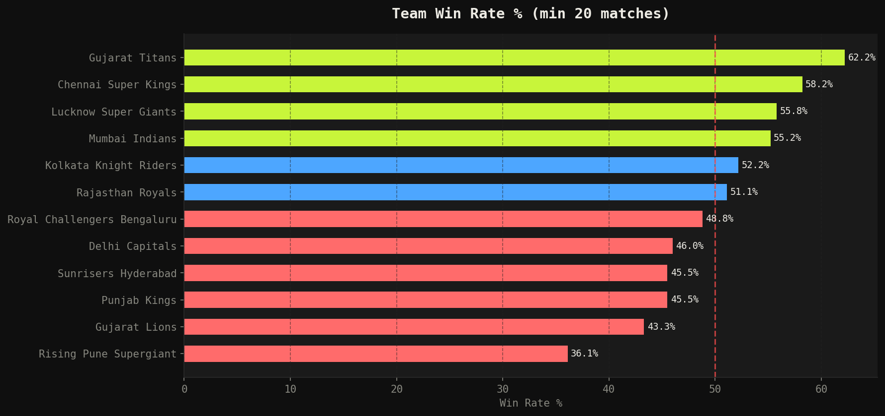
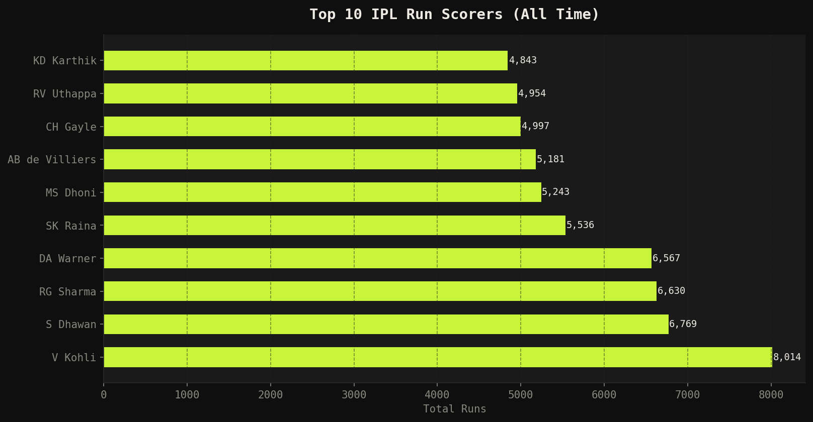
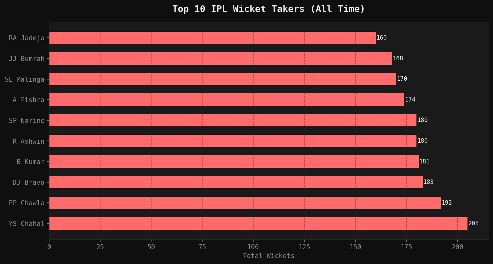
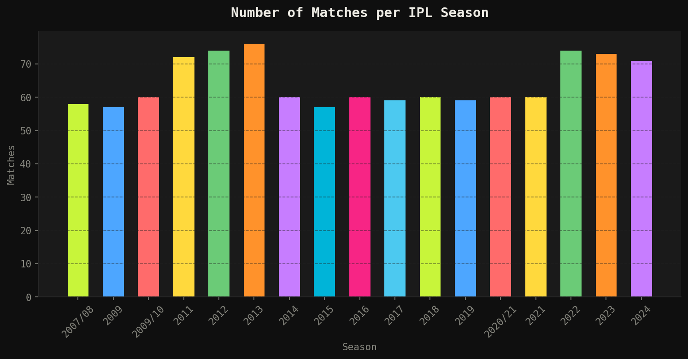
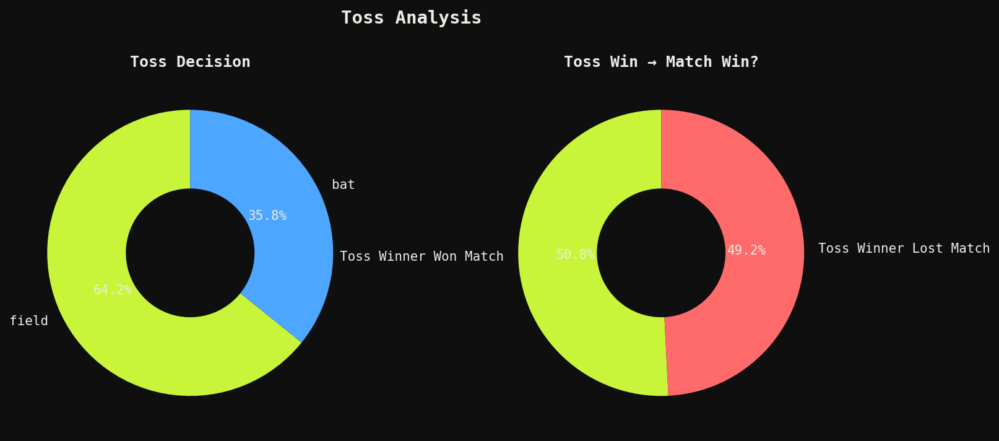
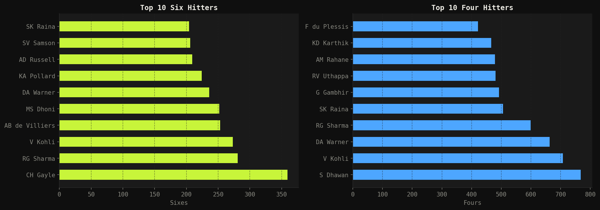
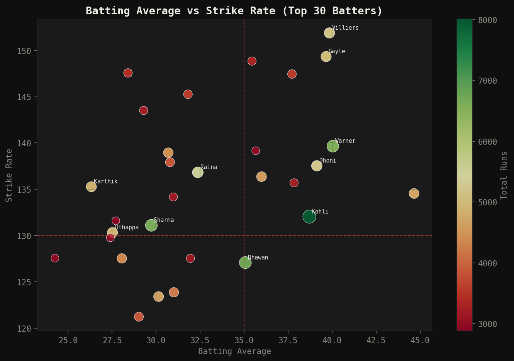
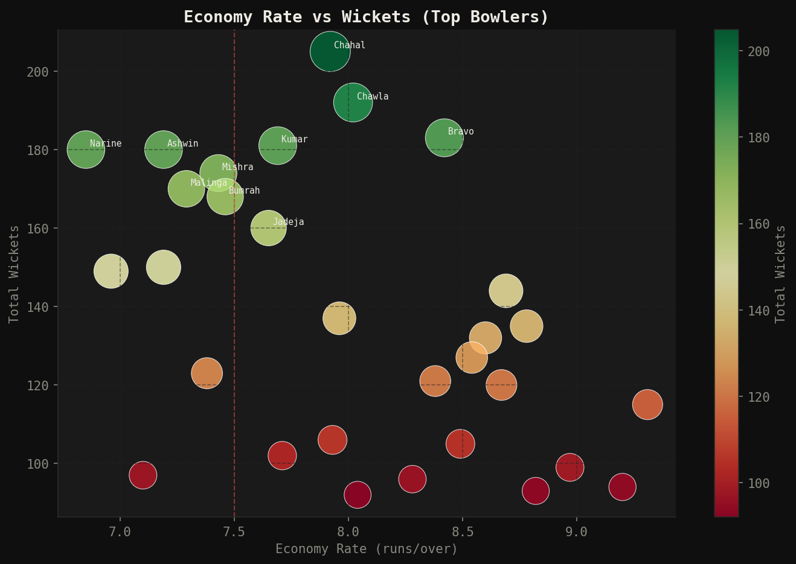
A self-contained 748KB HTML file — 10 interactive Plotly charts with hover tooltips, zoom, and pan. No server, no Python required. Open Live Dashboard ↗
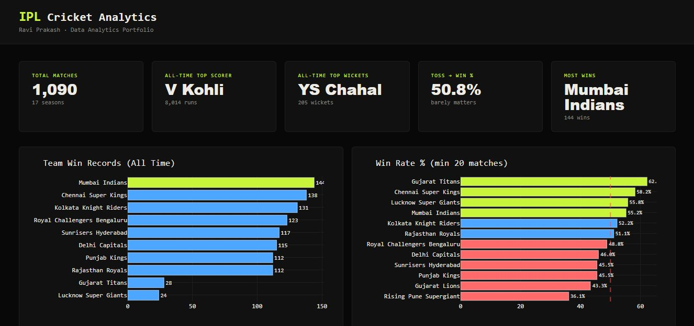
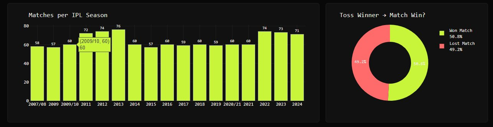
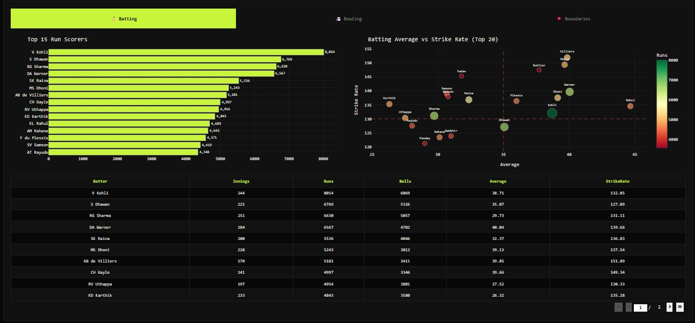
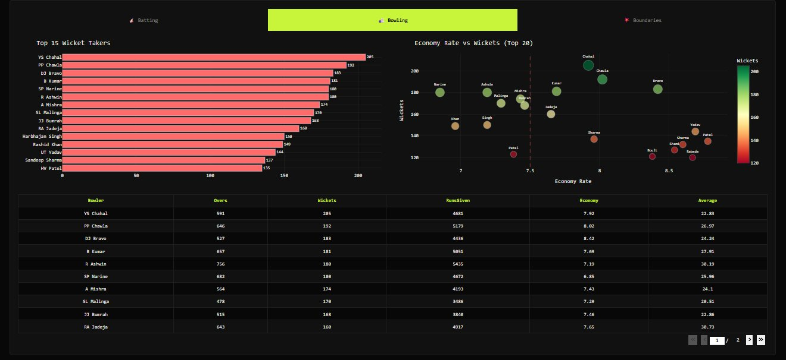
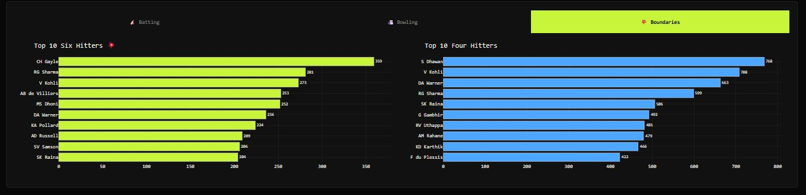
Mumbai Indians lead all-time with 144 wins, 6 more than CSK (138). Yet Gujarat Titans have a higher win rate at 62.2% — a newer franchise performing at elite level.
Kohli leads with 8,014 runs in 244 innings — nearly 1,300 more than Shikhar Dhawan (6,769). Average of 38.71 with SR of 132.05.
Winning the toss leads to winning the match only 50.8% of the time — statistically insignificant. Team quality matters far more than the coin flip.
Chris Gayle hit 359 sixes — 78 more than #2 Rohit Sharma (281). His strike rate of 149.34 with 4,997 runs makes him the most destructive batter in IPL history.
Chahal leads with 205 wickets. SP Narine stands out with 180 wickets at just 6.85 economy — the most economical among top wicket takers.
Among top run scorers, AB de Villiers has the best strike rate at 151.89 with 5,181 runs — a perfect combination of volume and aggression.
The most technically valuable part of this project was building the automated Excel report with openpyxl. Writing formatted multi-sheet workbooks with styled headers, alternating fills, and column widths programmatically is exactly what data analysts do for MIS automation — it directly mirrors what I did at MECON with Python and Power Query.
The static HTML dashboard approach was a deliberate engineering decision. Dash is powerful but requires a running server — not practical for a portfolio. Converting to a self-contained Plotly HTML file using pio.to_html gives full interactivity at zero hosting cost. That kind of practical thinking is what separates a good analyst from a great one.
The toss finding (50.8%) is a good example of letting data challenge assumptions. Most cricket fans believe the toss is crucial — the data says otherwise. This is the kind of insight that makes for memorable interview conversations.
View all 3 projects — HR Attrition Analytics, Sales Performance Dashboard, and IPL Cricket Analytics.